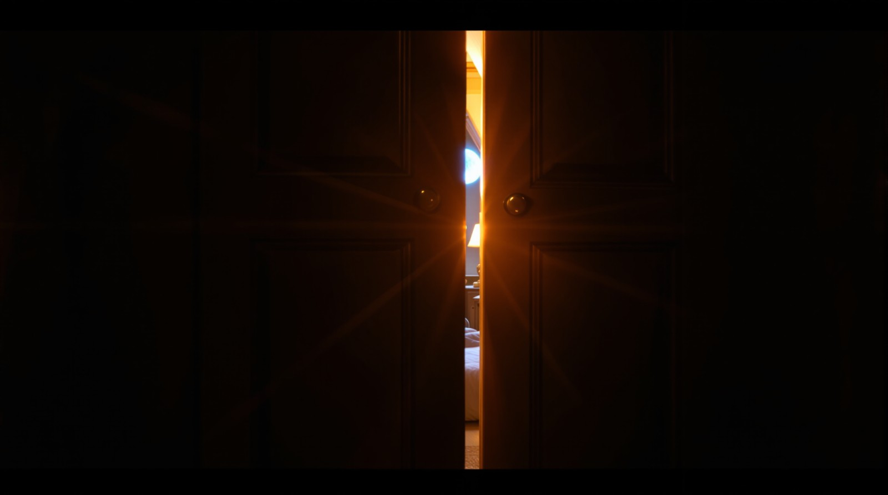

WARDROBE E→A · SEPTEMBER 5, 2026
The Cinematographer can reject an unshootable route, propose a spatial repair, and then reject the actual generated set.
TunnelVision is agentic filmmaking research extending filmmaker Terran Boylan's original TunnelVision technique. This chapter records the final TunnelVision Research Phase 1 experiment. It is not a Camotion tuning experiment. Camotion Phase 1 remains frozen. No Seedance videos were generated. The protocol stop after inspecting actual X is the result, not an experiment failure.
Notation: E = luminous cavern with a closed ordinary bedroom door. A = attic bedroom looking at the wardrobe. X = one proposed intermediate camera position.
A destination object is not enough. Semantic compatibility is not enough either.
Shootability requires traversable volume, threshold depth, camera position, camera orientation, and a physically plausible route between observations. Ask: is there somewhere physically plausible for the camera to be between these two stills?
Stage 1 · independent shootability review
NEEDS_INTERMEDIATE
Gemini 3.1 Pro inspected the actual canonical E and A stills. The prompt did not tell it to reject E→A. Frozen before any image or video call. Prediction gqanpekw6drmy0d0eeptpzcmew.
Exact reasoning: the door in the start image is closed, providing no traversable volume or threshold depth for the camera to enter. Additionally, pushing through that portal would logically place the camera at the threshold looking into the room, not halfway across the room looking back at the wardrobe as composed in the end image.
Two problems: E’s closed door lacks visible traversable volume, and A’s camera facing is incompatible with the implied continuous route. Do not formalize a large camera-pose schema from this one result.
ACTUAL SETS INSPECTED
Canonical E
START

Canonical A
END

Proposed X
CAMERA POSITION
Not a 50/50 blend. Requested place: inside the dark wooden wardrobe, looking outward through partially open doors into the attic. Intended route: cavern → glowing door → wardrobe interior → attic. One FLUX 1.1 Pro Ultra generation, seed 10106, prediction xybr3y5zhsrmw0d0eeqb9011qc, no aesthetic retry.
Actual generated X
INSPECTED
The still did not fully realize the requested geometry: near-closed double door, two knobs, narrow starburst crack, hanging coats barely represented.

Stage 3 · actual-X review
BOTH LEGS REJECTED
E→X = NOT_SHOOTABLE: E is a single door; X is double doors with two knobs.
X→A = NOT_SHOOTABLE: X looks out from a dark interior; A looks from the room back at the wardrobe. Connecting them requires a cut or about a 180° turn not represented by the route.
Prediction 9qc4wxzranrmt0d0eeq9b3mx4g. X was not regenerated. No Camotion plans. No shooting frames. No videos. The fresh seed-90 direct E→A control was not generated because the protocol stopped first. Historical Integration Test 01 E→A remains historical evidence only. There is no video comparison in this experiment.
Generated media is evidence, not assumed success.
The Cinematographer rejected an apparently sensible E→A transition, proposed a spatial repair rather than an aesthetic midpoint, inspected the actual generated repair, and rejected its own strategy when the set did not satisfy the required geometry. A proposed intermediate canonical is not automatically accepted because an agent requested it. One bounded Wardrobe Loop case. Not proof of general autonomous shootability. Infer nothing new about Camotion from this experiment.
Research Phase 1 is complete
STOP LINE
Phase 1 established a sufficiently supported pipeline, not an optimal one. No more dedicated Phase 1 research experiments. Next milestone: product development, then Movie #2 through the product. The product itself becomes the experimental apparatus. See the experiment report.